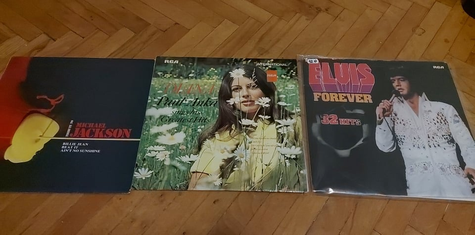

Ja volim slušati glazbu. Kad slušam glazbu pobjegnem u drugu realnost i uopće ne mislim na probleme s kojima se susrećem, već uživam u glazbi koju slušam, neovisno koja je to glazba. Volim slušati SVU glazbu, može to biti i neki žanr glazbe koji inače ne slušam, bitno da mi se sviđa pjesma.
Navest ću neke od žanrova koje volim slušati, odnosno vrstu glazbe, te neke od pjesama iz tih žanrova.
| PJESME | |||||
|---|---|---|---|---|---|
| Billie Eilish - 8 | YONAS - Die Young | Audrey Hepburn - Moon River | Avril Lavigne - Complicated | Scorpions - Wind of Change | Elvis Presley - Dont Be Cruel |
| Nelly Furtado - Im Like a Bird | Lady Gaga - Bad Romance | Toše Proeski - Čija si | Tommy Edwards - Its All In The Game | Paul Anka - Puppy Love | Michael Jackson - Smooth Criminal |
| Ariana Grande - One Last Time | Culture Club - Karma Chameleon | Boney M. - Rasputin | Eminem - Without Me | Dax - Dear God | Daleka Obala - Noć je prekrasna |
| Melanie Martinez - Mrs. Potato Head | Sejo Kalač - Da li si me voljela ili nisi | Wham! - Wake Me Up Before You Go-Go | Outkast - Hey Ya! | Cyndi Lauper - Girls Just Want To Have Fun | Indira Radić - Zmaj |
| Krankšvester - Retardirana | Lana Del Rey - Blue Jeans | Ricky Nelson - Lonesome Town | Frank Sinatra - Fly Me To The Moon | Thompson - Vjetre s Dinare | Flo Rida - I Cry |
Na festivalu gramofonskih ploča koji se održao u Osijeku kolega Marko Pešut i ja otišli smo pogledati kakvih ima ploča. Tražio sam određene autore poput Franka Sinatre, Dean Martina, Tommy Edwardsa, Henry Mancinia, Ricky Nelsona, Elvis Presleya... Pronašao sam neke zanimljive ploče i kupio ih. Kupio sam dvije ploče od Elvisa koje su bile u kompletu od 32 pjesme, Paula Anke i Michael Jacksona. Znao sam da kući imam neki stari gramofon, ali kad sam ga ispobao nažalost nije radio, ali svejedno mi je drago da imam te ploče. Jedan dan ću kupiti gramofon pit kvalitetno vino i uživati u klasicima poput Put your head on my shoulder, Cant help falling in love, Billie Jean i još raznim drugima.
Jedna vedra pjesma za ove tmurne dane.
Ekipa s informatologije se odlučila opustiti nakon napornog tjedna i odlučila posjetiti obližnji klub. Dobro smo se zabavljali, glazba je bila stvorena za plesanje. U sljedećem videu mogu se vidjeti dva mladića s informatologije kako se zabavljaju na najbolji mogući način. Imena tih mladića su Marko Pešut i Luka Marić
U ovome audio predlošku fićukam jednu vrlo poznatu melodiju.